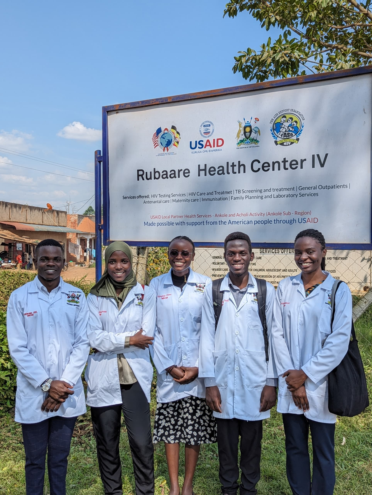
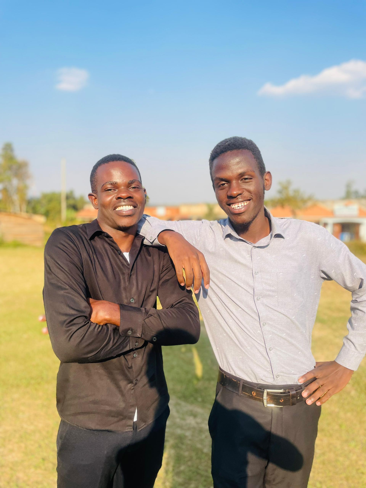
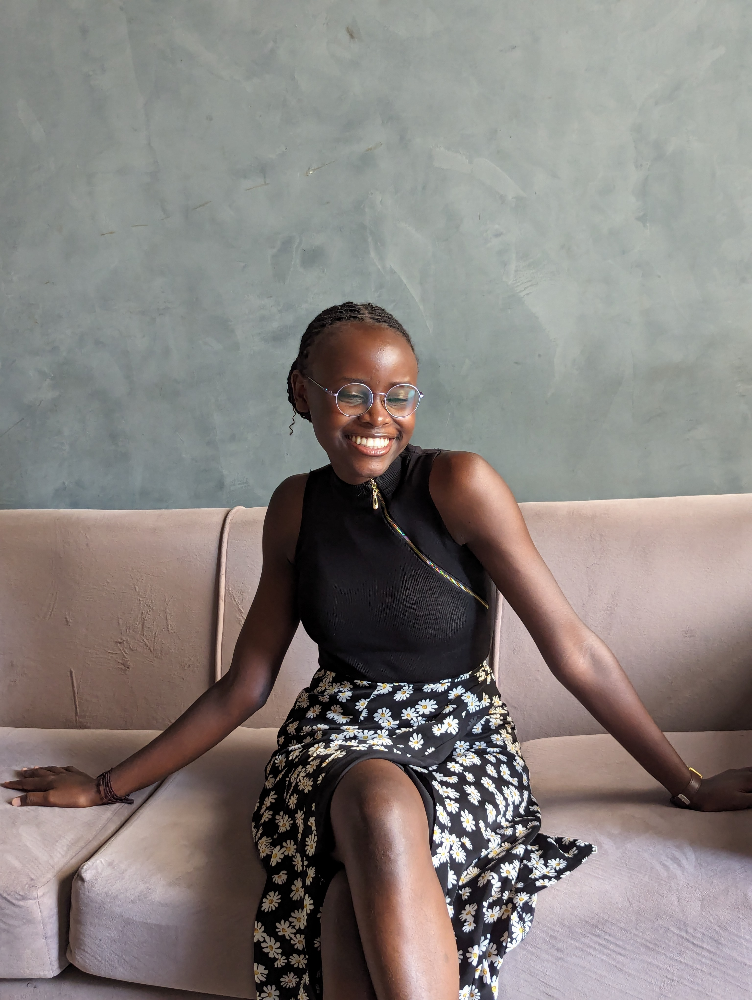
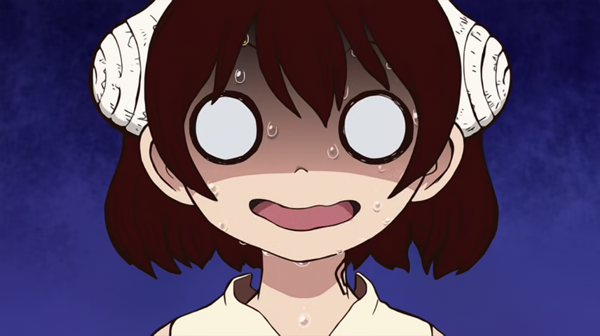

@marnoldk
Once said!!"
Sorry to disappoint you! I said nothing 😂😂😂😂💀

Upcoming web developer, currently on HTML & CSS programming languages.
Also a medical student at Makerere University, College of Health
Sciences, in his 4th year of study.
Highlighted below are some of the "once said!!" statements of my
colleagues during COBERS. They are hilarious. The line between them
being true and lies is too minute to be noticed.
Hope you find them amusing.
@marnoldk
Once said!!"
Sorry to disappoint you! I said nothing 😂😂😂😂💀

@joel256
When i was with my grandmother, she taught me how to cook, drive a car,
a wheelbarrow, tractor, play cards etc (at this point his lies were too
big that I think in his imagination his grandmother taught him everything
there is to learn 👌😂😂). "Guys lemme first have breakfast, when are we
going for lunch, aren't you guys going for lunch, I want to snack" (It's
like this guy was always hungry 🙄). Every weekend, "Guys am going to
town to my former school and teach those kids, I will be back by Sunday"
(he mostly returned on Monday of which he took it as a day off resuming
work by Tuesday. Though most times I think he was going to see his gal
🤫☠️🏃♀️)
@Innocent
At my age —
Old music is gold, I don't understand the kind of music Marvin and Diana
listen to. (and he played "WALI OLIDDE KUNKOKO" which Diana and Bushirah
mashed with their rare singing skills 😂)

@Kayesup
I am a feminist. Do you even know what it means? 😅 I am a strong
independent woman and I can't depend on a man. "I will get a man when
Marvin gets a girlfriend" (2024). [And she waited till 2026 but Marvin
wasn't shaken 😅😂, so she's still single and searching]. The VHT's
omushija 😅

@bushirah
I don't remember exactly what she said but truth be told, she said a lot
most of which was making fun of others 😂👌👣🏃♀️. Wali olidde kunkoko,
guys I want to buy you whole chicken…

@diana
I'm going to get married to a UK rich man driving a nice car. She was
always putting Vaseline on her lips (don't know what for up to this time
😂) and doing daily fitness checks of her outfit, not forgetting the neck
prolongation while on Netflix 😂.
Guys my mother said this extension should take me till marriage😂dont over put your devices, you will spoil it(later the next year, it got spoilt🤣😂)

@Bruno
"Guys come we go for lunch." (after doing nothing the whole day while we
were working at OPD) — Another culprit who was always hungry 🤣😂. "Guys
am scheduling my personal trip to Rwanda, who wants to come with me?"
(he went alone 🤣)